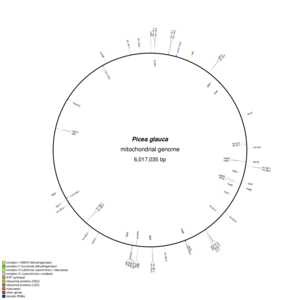
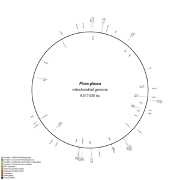

PhD thesis committee meeting
Shaun Jackman
2015-07-27
Shaun Jackman
Genome Sciences Centre, BC Cancer Agency
Vancouver, Canada
@sjackman
github.com/sjackman
sjackman.ca

White Spruce Organelles
Organellar Genomes of White Spruce (Picea glauca): Assembly and Annotation
 
ABySS
Assembly by Spaced Seeds
for the assembly of long reads

Homebrew Science
Homebrew | Linuxbrew | Homebrew-science

RECOMB 2015
Research in Computational Molecular Biology
Warsaw, Poland · 2015 April 10–15

Shaun Jackman
Genome Sciences Centre, BC Cancer Agency
Vancouver, Canada
@sjackman
github.com/sjackman
sjackman.ca
PacBio RS II

Oxford Nanopore MinION

A visual comparison

PacBio circular consensus

Nanopore 2D

Pipelines
| Assembler | Overlap | Correct | Layout | Consensus |
|---|---|---|---|---|
| HGAP | BLASR | PBDAGCon | Celera | Quiver |
| Falcon | DALIGNER | Falcon | Falcon | Quiver |
| PBcR | MHAP | Falcon | Celera | Quiver |
| Dazzler | DALIGNER | Dazzler | Dazzler | Quiver |
| Nanocorr | BLAST | PBDAGCon | Celera | Celera |
| Nanopolish | DALIGNER | Nanocorrect | Celera | Nanopolish |

Assembling large genomes